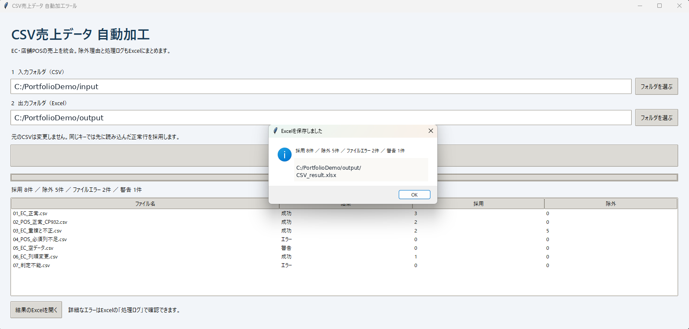
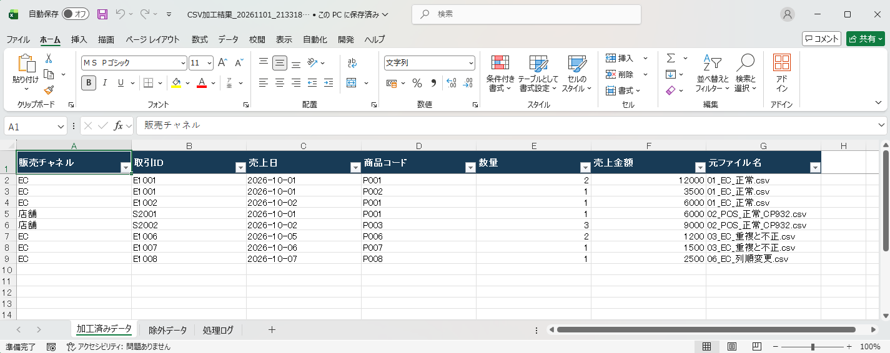
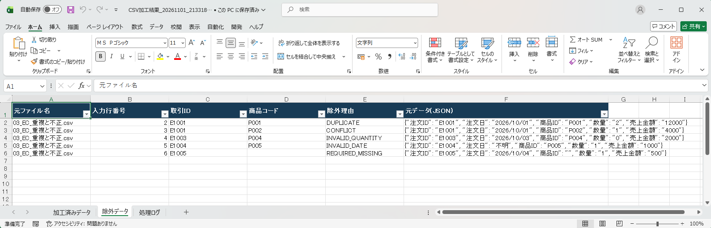
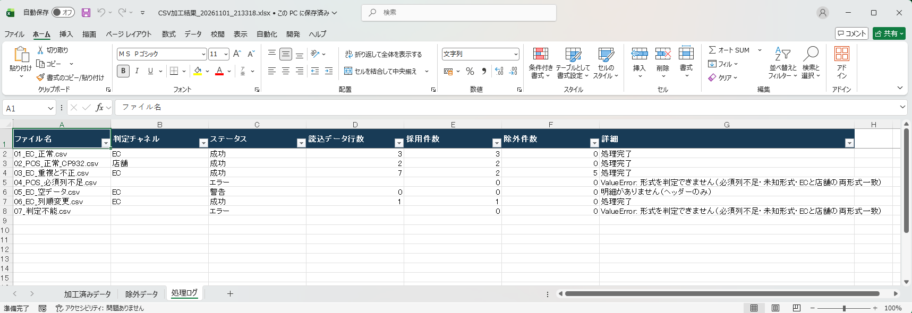
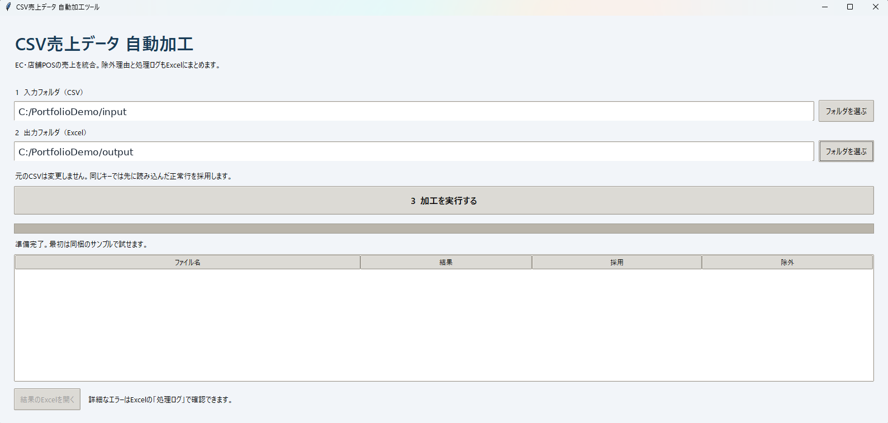

架空の業務委託案件を想定した自主制作サンプルです。実顧客への導入実績ではありません。
Before / After
Before：CSVを個別に開き、列名・日付を揃え、重複・異常値を確認しながら手作業でExcelへ統合。
After：入出力フォルダを選択して実行。形式判定・正規化・検証・重複判定・Excel出力を自動化。
サンプル検証結果
正常採用 8件除外 5件ファイルエラー 2件空データ警告 1件
7ファイル・13明細を使用。エラー・警告は意図的に含めた異常系データによる想定どおりの結果。自動テスト9件成功（同梱検証記録）。
画面・出力例





主な機能と設計
ECとPOSの列名マッピング／UTF-8・CP932対応／日付・数値・必須項目チェック／チャネル＋取引ID＋商品コードによる重複判定／除外理由記録／Excel3シート出力／ファイル別処理ログ／GUI操作。
元CSVは変更しません。返品・負数・未知の形式推測は対象外。実運用での削減時間は未計測です。